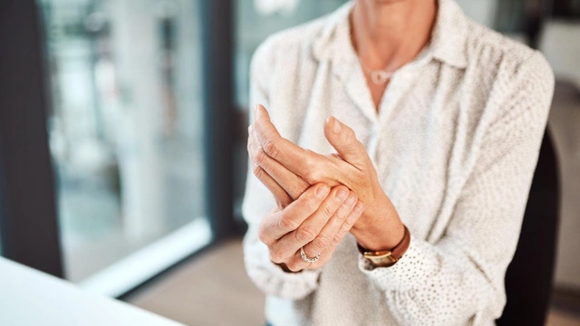

В обновленные клинические рекомендации по остеоартриту впервые включены БАДы

Минздрав России опубликовал обновлённые клинические рекомендации по ведению пациентов с полиартрозом (генерализованным остеоартритом)1 — одним из самых распространенных заболеваний суставов. Документ отражает новые подходы к комплексной терапии и впервые включает нутритивную поддержку и БАДы с доказательной базой как дополнительную опцию помощи.
Остеоартрит — одно из наиболее распространённых заболеваний опорно-двигательного аппарата. Патология характеризуется поражением всех структур сустава. В России, по официальной статистике, зарегистрировано свыше 4,3 млн пациентов с остеоартритом2. Однако эпидемиологические исследования показывают, что реальное число больных может достигать 15 млн человек3. Почти 40% из них — люди трудоспособного возраста2. Заболевание развивается в результате сочетания возрастных, гормональных, генетических и внешних факторов, включая ожирение, травмы и профессиональные нагрузки1. Частота остеоартрита увеличивается с возрастом, болезнь более распространена среди женщин1. В настоящее время в лечении остеоартрита применяется комплексный подход, который включает использование нефармакологических методов (снижение массы тела, лечебная физкультура, ортопедические средства), а также медикаментозную терапию (хондропротекторы, НПВС, внутрисуставное введение глюкокортикоидов) и хирургическое лечение. Обновлённый документ впервые содержит рекомендацию назначать пациентам биологически активные добавки (БАД), имеющие доказательную базу, так как они приводят к уменьшению боли, улучшению функциональной активности пациента с остеоартритом. Среди действующих веществ, прописанных в клинических рекомендациях, указаны пероральные коллагены, метилсульфонилметан (МСМ), витамин D, босвеллиевые кислоты и ряд других компонентов. Они защищают ткани суставов от разрушения, способствуют их обновлению, а также уменьшению болезненности и припухлости, обеспечивают поддержание их функционального состояния. «Классическая терапия остеоартрита имеет ограничения, особенно в долгосрочной перспективе. Мы ищем новые решения для облегчения состояния пациентов. Одним из перспективных направлений является нутритивная поддержка суставов, в частности применение неденатурированного коллагена II типа», — подчеркнула Людмила Ивановна Алексеева, д. м. н., профессор кафедры ревматологии Первого МГМУ имени И. М. Сеченова.4 Нативный коллаген II типа помогает иммунной системе не воспринимать собственный коллаген, который высвобождается при повреждении хряща, как чужеродный белок. Благодаря этому снижается иммунная реакция и замедляется разрушение хрящевой ткани. Согласно данным клинических исследований5, комбинация неденатурированного коллагена II типа с босвеллиевыми кислотами, МСМ и витаминами D3 и C обеспечивает статистически значимое снижение суммарного индекса по шкале WOMAC и способствует более быстрому улучшению качества жизни по сравнению с традиционной комбинацией хондроитина сульфата и глюкозамина гидрохлорида.